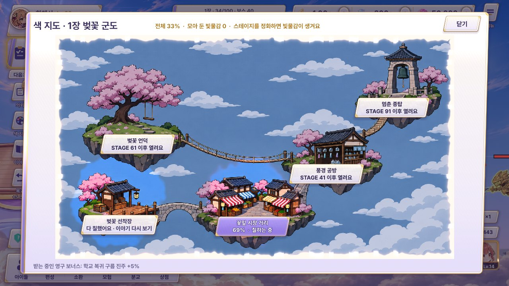
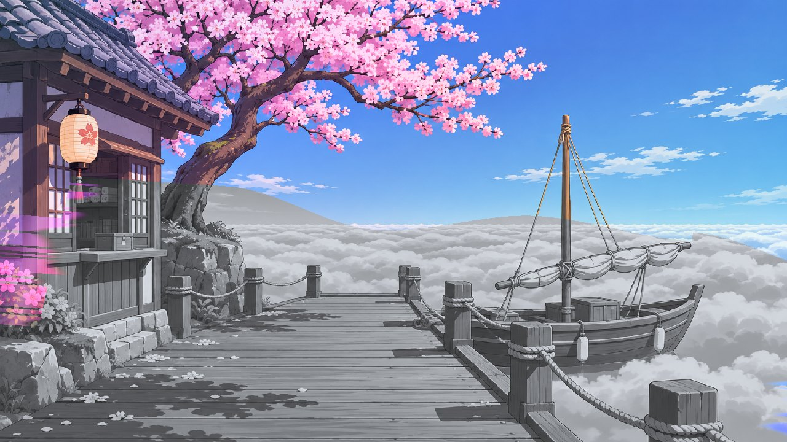
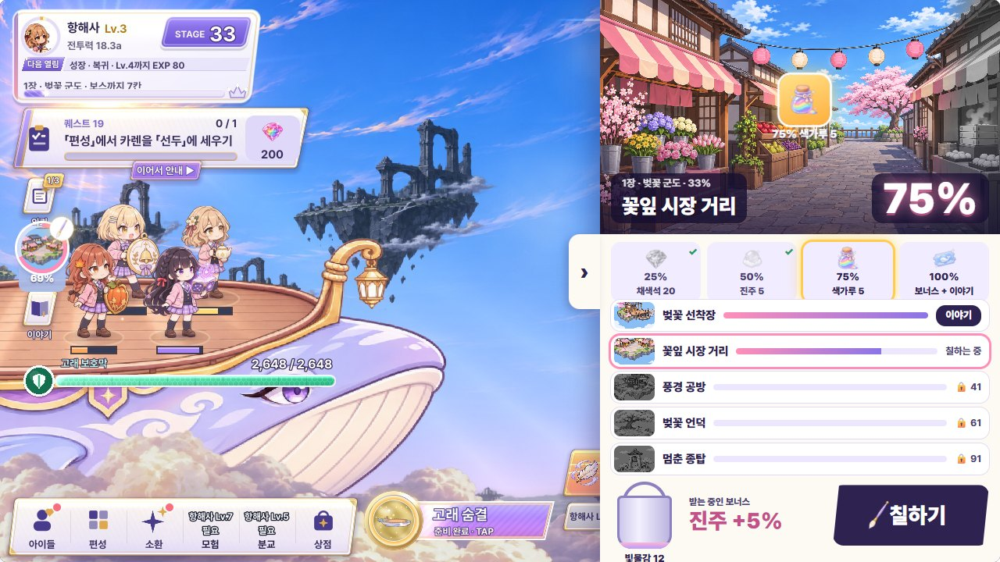
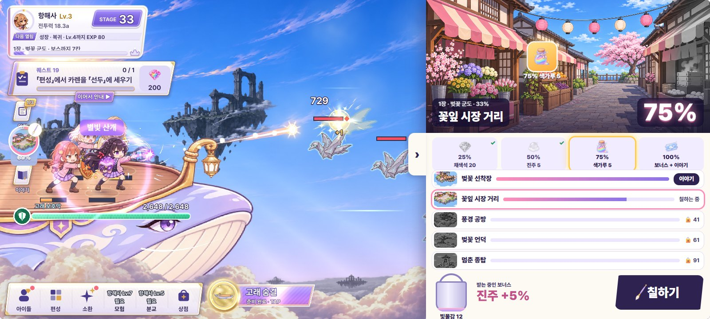

색 지도 서랍 B 「큰 미리보기」 — 수정 시안 (#28 · #29 · #66)
PD가 고른 B 큰 미리보기를 다듬은 판입니다. 서랍은 남색 아틀리에 판 + 금 레일(다른 화면의 크림 판과 다른 얼굴), 위에는 금 액자 속 장소 그림이 잿빛 위로 칠해지고, 아래로 보상 줄 → 장소 5곳 → 받는 중인 보너스 합계 → 물감통 · 「칠하기」 순으로 한 번에 읽힙니다. 수치는 지금 게임 값(scripts/color_world.gd: 장소 비용 80 · 100 · 120 · 140 · 160, 첫 정화 +2.5 · 다시 +0.8 · 장 보스 +150, 자리 비움 분당 0.5 · 최대 8시간)이고, 25 · 50 · 75% 보상은 설계 문서의 가안입니다. 「노드 이름」을 켜면 가이드용 이름(ColorDrawerPlace0~4 · PaintButton)이 붙습니다.
지금 게임
화면 전체를 덮는 판이라 전투가 멈춘 것처럼 보이고, 장소를 눌러도 %가 그대로입니다. 보너스는 아래 작은 회색 한 줄이고, 물감이 어디서 얼마나 오는지 보이지 않습니다.


원래 시안 B (비교용)
크림 판 + 큰 그림 + 줄 목록. 물감통 12가 「칠하기」 한 번에 얼마를 올리는지, 물감이 어느 스테이지에서 오는지, 다음 보상까지 얼마 남았는지, 받는 보너스 합계가 무엇인지가 빠져 있었습니다. 움직이는 원본: feedback70/colormap/index.html


1. 수정 B — 「칠하기」 한 번
물감통 12 → 꽃잎 시장 거리 +12% (69 → 81%)
누르기 전부터 보상 줄의 금빛 빗금 = 이번 칠하기로 오를 만큼, 아래 칸에 「칠하기 1번 = 물감통 12 전부 → +12%」가 보입니다. 누르면 물감통이 기울며 물감 방울이 액자로 날아가고, 붓이 잿빛을 걷어 69 → 81%. 75%를 넘는 순간 그 칸이 금빛으로 바뀌며 보상 상자(색가루 5)가 튀어나오고, 왼쪽 전투 하늘도 잠깐 색이 짙어집니다(지금의 apply_sky). 왼쪽 HUD 작은 원도 같이 차오릅니다.
 STAGE 정화마다 +2.5 (1장 · 지금 33)
STAGE 정화마다 +2.5 (1장 · 지금 33) 자리 비움 분당 0.5 · 최대 8시간
자리 비움 분당 0.5 · 최대 8시간2. 물감통을 누르면 — 물감이 어디서 얼마나
물감통 자세히 (출처 · 지금 STAGE 강조)
물감통을 누르면 위로 말풍선 판이 열려 빛물감이 생기는 곳과 양을 한 줄씩 보여 줍니다. 지금 밀고 있는 STAGE 33 첫 정화(+2.5) 줄이 분홍으로 강조되고, 1장(STAGE 1~100)만 이 지도에 물감을 준다는 것, 장 보스 첫 정화 +150, 자리 비운 동안 분당 0.5(최대 8시간 = 240)가 함께 보입니다. 바깥을 누르면 닫힙니다.
빛물감은 어디서? 물감통 지금 12
- 1장 스테이지 첫 정화STAGE 1~100 · 지금 STAGE 33+2.5
- 이미 깬 스테이지 다시 정화복귀 뒤 다시 지나갈 때+0.8
- STAGE 100 장 보스 첫 정화지도 전체에 크게 번져요+150
 하늘 이벤트색 소나기 물방울 +5 (최대 8번) · 무지개 다리+5 ~ 30
하늘 이벤트색 소나기 물방울 +5 (최대 8번) · 무지개 다리+5 ~ 30- 자리 비운 동안분당 0.5 · 최대 8시간 = 240 · 돌아오면 저절로+0.5/분
물감통 전부를 지금 고른 장소에 붓고, 그 장소를 다 칠하고 남은 몫은 다음 열린 장소로 넘칩니다.
3. 돌아왔을 때 — 자리 비운 동안 모인 물감
1시간 12분 비움 → +36이 저절로 칠해짐 (33 → 69%)
자리 비운 동안 모인 물감(분당 0.5)은 설계대로 돌아왔을 때 저절로 붓고, 서랍 위에 하늘색 띠로 얼마 동안 · 얼마가 · 어디에 칠해졌는지 알립니다. 보상 줄에서 그 몫은 하늘색 구간으로 따로 보이고, 그사이 넘은 50% 보상도 상자로 받습니다. 물감통이 비었을 때는 「칠하기」가 어두워지고 다음 STAGE 정화로 +2.5가 안내됩니다.
자리 비운 시간 (최대 8시간)
4. 다른 장소를 눌렀을 때
잠긴 장소 — 풍경 공방
잠긴 장소도 그림을 잿빛 · 흐림으로 미리 보여 주고 언제 열리는지(STAGE 41 · 8칸 남음), 다 칠하면 받는 궁극기 쿨타임 -3%, 필요한 빛물감 120을 알려 줍니다. 「칠하기」는 그대로 지금 칠하는 곳(꽃잎 시장 거리)에 붓습니다.
100% 보너스 · 궁극기 쿨타임 -3%
100% 보너스궁극기 쿨타임 -3%다 칠한 장소 — 벚꽃 선착장
다 칠한 장소는 액자가 금빛으로 바뀌고 꽃잎이 날리며, 보상 4칸이 모두 ✓, 받는 중인 보너스(구름 진주 +5%)가 이 장소에서 온다는 것을 보여 줍니다. 이야기는 「이야기 다시 보기」를 눌렀을 때만 엽니다(전투는 멈추지 않음).
정보 한눈에
- 장소 진행액자 오른쪽 아래 큰 % + 「빛물감 69 / 100」 + 장소 칸마다 작은 막대
- 다음 보상보상 줄에서 다음 칸만 분홍 테 + 「다음 보상까지 6」
- 받는 보너스 합계금 줄 한 칸: 지금 받는 것 + 다음에 받을 것 + 다 칠한 곳 점 1/5
- 물감통 · 칠하기 1번물감통 숫자 + 「+12%」(금빛 빗금이 보상 줄에서 미리 보임)
- 물감을 주는 스테이지1장 STAGE 1~100 정화(첫 +2.5 · 다시 +0.8 · 장 보스 +150), 물감통을 누르면 전부
- 자리 비움 물감분당 0.5 · 최대 8시간, 돌아오면 저절로 칠하고 하늘색 띠 · 하늘색 구간으로 알림